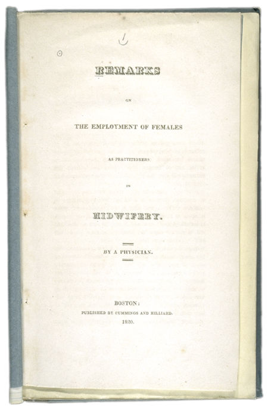

Questions to ask these pages: 1. What advantages did the author see for a doctor who practices midwifery?
Questions to ask the book: 1. What were the
author's arguments against women in midwifery? 2. How could the
author's occupation have affected his arguments? |
Title page | Page 19 | ||||||
|  |
||||||||
|
||||||||||||||||||